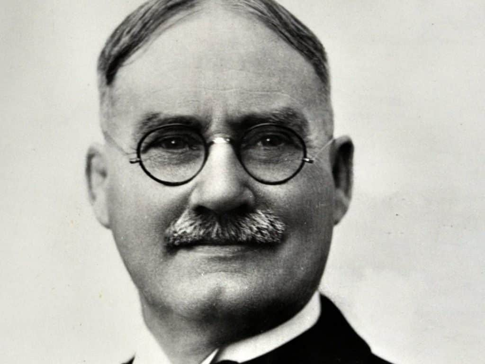

Історія

Дослідники старовини давно запримітили, що людство, в різних кінцях світу та в різні часи, послуговувалося іграми та забавами з округлими предметами. Якщо для дітей то була чи не єдина забавка, то для дорослих це перетворювалося в певний символічний ритуал.І лише з початків ХХ століття людська цивілізація почала використовувати ігри як розвагу для вдосконалення свого тіла та своєї фізичної форми, а потім це перетворилося у спортивні змагання, як на аматорському рівні, так і на професійному.
На відміну від багатьох видів спорту, народження яких обросло міфами і легендами, початок баскетболу було точно задокументовано, адже його вигадав і впровадив Джеймс Нейсміт